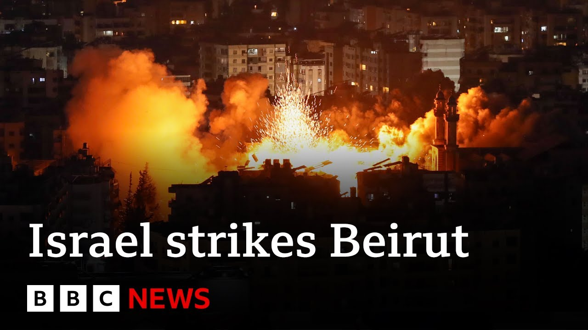

【以色列空袭黎巴嫩首都贝鲁特，正值宗教节日前夕 | BBC新闻】
Summary: Israel conducted an airstrike targeting buildings in southern Beirut, claiming they were used by Hezbollah for drone operations. Earlier, evacuation warnings were issued, causing panic among residents.
摘要： 以色列对贝鲁特南部郊区发动空袭，声称该地区建筑被真主党用于无人机作战。空袭前以军已发布疏散警告，引发当地居民恐慌。

⏱️ Estimated Reading Time: 3 min
📚 高考3500生词 📚 雅思生词 📚 托福生词 📚 GRE生词 📚 UP主推荐生词
Israel has carried out air strikes on Beirut.
以色列对贝鲁特发动了空袭。
The attack followed an evacuation warning by the Israeli military for several buildings in the southern suburbs of the Lebanese capital.
此次袭击前，以色列军方曾对黎巴嫩首都南郊的几栋建筑发出疏散警告。
The IDF claims the buildings were being used for drone production by the Iranian-backed group Hezbollah.
以色列国防军声称这些建筑被伊朗支持的黎巴嫩真主党用于无人机生产。
There were chaotic scenes before the attack as large numbers of people tried to leave the area.
空袭前现场一片混乱，大量民众试图逃离该地区。
The US-backed organization responsible for distributing aid within Gaza says that all distribution sites are closed.
负责加沙境内援助物资分发的美国支持机构表示所有分发点均已关闭。
The Gaza Humanitarian Foundation has not said when they'll reopen.
加沙人道主义基金会未透露何时重新开放。
A correspondent in Jerusalem, Barbara Basha, told us a little more about this.
耶路撒冷记者芭芭拉·巴沙向我们提供了更多细节。
Yes, it has been working at renovating and repairing its sites, the group has said after there have been a number of mass casualty events around the area as people were queuing or trying to get to those aid hubs which we've been reporting having gone through these Israeli military zones and there having been gunfire that the eyewitnesses have accused Israeli troops.
该组织称，由于民众在穿越以军管制区前往援助中心时发生多起大规模伤亡事件——目击者指控以军开火——他们正对站点进行修缮。
The Israelis say they are still investigating, but in the meantime, the foundation has closed its sites for this repair work.
以色列方面表示仍在调查，同时基金会已关闭站点进行修缮。
It opened yesterday afternoon, two of them, two of the four.
昨日下午四个站点中的两个曾短暂开放。
And now it's saying again that none of them are going to be open for the time being, and people should wait to hear for the next announcement of when they can come.
现在基金会再次宣布所有站点暂时关闭，民众需等待下次开放通知。
Israel's prime minister confirming that the Israeli government is supplying weapons to a group in Gaza, a group that some see as a criminal gang that presents itself as an opposition force to Hamas.
以色列总理证实政府正向加沙某武装组织提供武器，该组织被部分人视为犯罪团伙，自称是哈马斯的反对派。
It's a bit of a political firestorm here in Israel.
以色列国内因此爆发政治风暴。
The opposition politicians have started to accuse the prime minister of doing this, of arming the clans that are anti-Hamas in Gaza to be a counterweight to Hamas to try to weaken it.
反对派政客指责总理武装加沙反哈马斯部族以制衡并削弱哈马斯的做法。
This was eventually Mr. Netanyahu responded to angrily.
内塔尼亚胡最终愤怒回应此事。
He was angry about the leak.
他对消息泄露感到愤怒。
But he defended the actual policy.
但他为这一政策辩护。
He said, "No, this is working. It means that our soldiers will be safer."
他表示："这很有效，能让我们的士兵更安全。"
But the criticism that was coming from both the left and right of the political spectrum was the opposite.
但来自左右翼政界的批评认为效果恰恰相反。
No, this is actually making Israel much less secure because you are creating a ticking time bomb, another sort of opposition force.
"这实际上让以色列更不安全，因为你们正在制造另一个潜在的敌对势力。"
A lot of this is revolving around a militia led by a man named Yasar Abu Shabbab who has a notorious reputation for heading a gang accused of stealing looting humanitarian aid.
争议焦点围绕亚萨尔·阿布·沙巴布领导的民兵组织展开，该头目因团伙被控劫掠援助物资而恶名昭著。
Now he disputes this.
但他对此予以否认。
He has also just recently denied that the Israelis are arming him.
他近日还否认接受以色列武器援助。